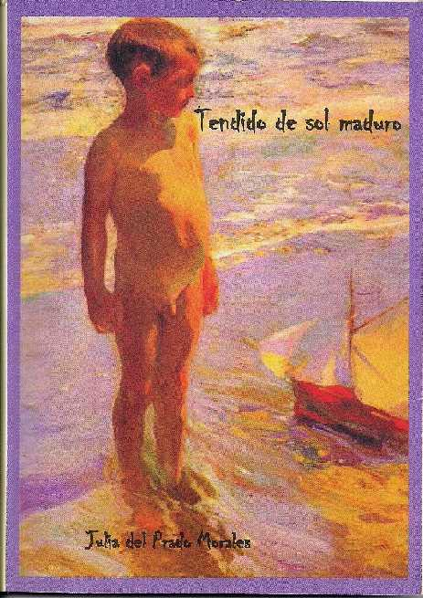

Tendido de sol maduro
Nueva obra de Julia del Prado Morales de Peña, Perú)
 |
|
|---|
El peñasco, separando la tierra del agua; el hoy de todo lo que fue y lo que será.
Esta idea flota entre algunos elementos vitales sobre los cuales Julia del Prado Morales, asienta en esta obra, las bases de la existencia.
Tierra y Agua; inmensas muchedumbres de aguas que reflejan lunas insistentes y atraen las gaviotas, únicos habitantes que propician un diálogo
entre las partes.
Aguas festivas, cuyo sonido arrulla y anuncia un mensaje concreto. Eco que evoca la imagen de un pirata; personaje que observa desde un faro distante en la playa,
tan lejos de lo que nos es propio…
El mar, que sueña y se mece a los pies, trae asomos de noticias tiernas de amor… Ellas brindarán una esperanza y un sentido a la rutina de la subsistencia diaria.
Ésa, desvanecida en días de anhelos de una juventud enamorada y que ahora regresa con su boca mustia abierta en una flor.
Y, apagados las ansias de los egos que fueron creciendo y distanciándose de los ciclos de las ansias vitales, sucede el reencuentro fecundo con lo esencial de
la existencia: Uno mismo, compenetrado en igual horizonte…
“A veces
cuando veo el océano
me pregunto quién soy”
… “danza queda…pero no fiesta.”
Y renace el ser que se realiza en el otro y en la creación de un nuevo ser, desperdigándose en el transcurso del tiempo, transformándose en los símbolos
esperanzados de la vida que se remoza y nos brinda nuevos aguardos en “lo inesperado” que florece en una rosa, en la retama y en el jazmín… en la música que
canturrea en el alma, en las musas dormidas de los amores de la madre y de los hijos, de los hogares que fueron, en ese terruño que es nuestra América
esencial y puedo así gritar: ¡Vivo!
“Quisiera mi pequeña
contarte más: sólo
-entre nosotras-
queda la vieja canción
de la vida y su retoño”
“Soy muchas
más soy la misma.”
Autor de este comentario: Gaciela María Casartelli por "Vida Reflexion", Córdoba, Argentina
juliadelp@yahoo.com
juliadelprado@gmail.com
http://Juliesusfotosy escritos.blogspot.com
http://vieenpajaritasdepapel.blospot.com
www.juliadelprado.huacho.org
Diseño y diagramación: Erik Alder Gutiérrez Maldonado
Ilustración de tapa o cubierta: El niño de la barquita de Soroll. Museo Sorola
Biblioteca Nacional de Perú.